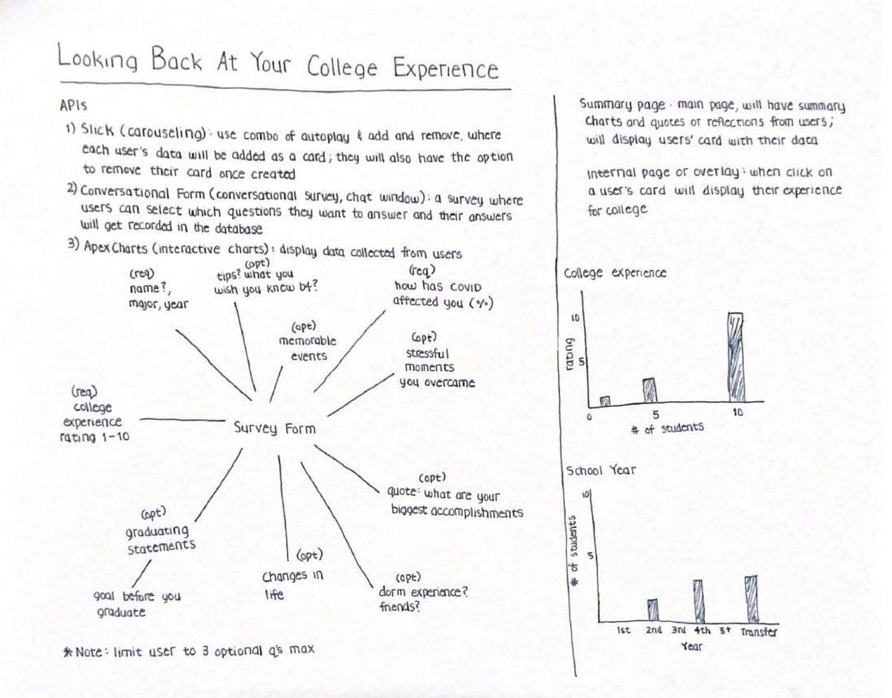
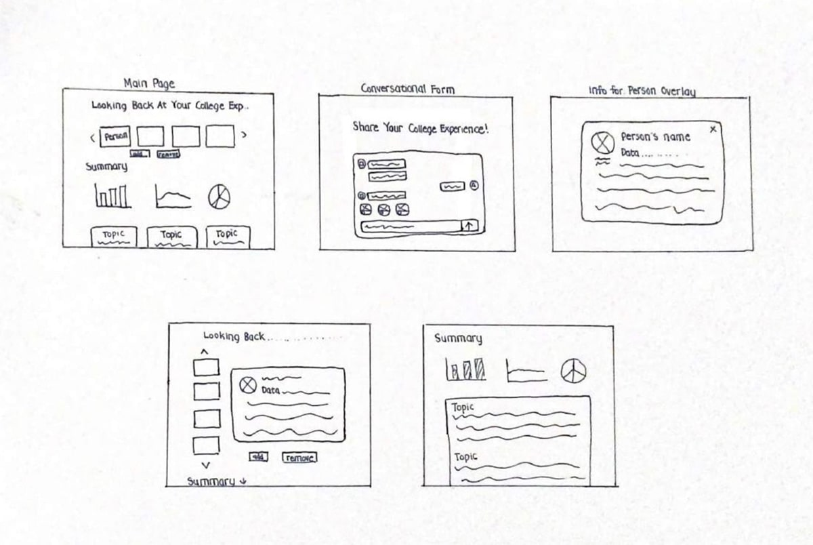
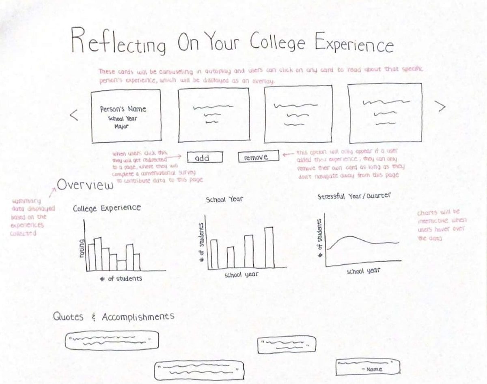
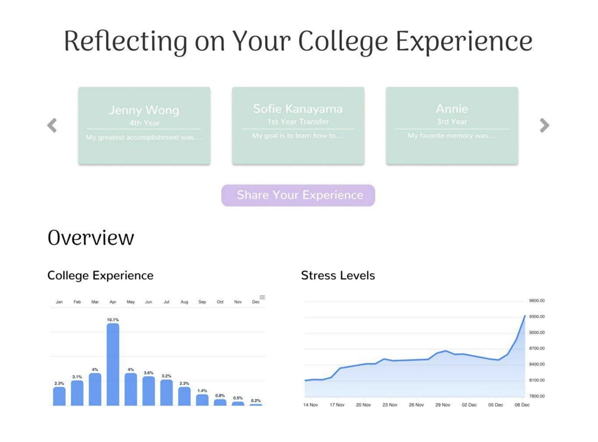
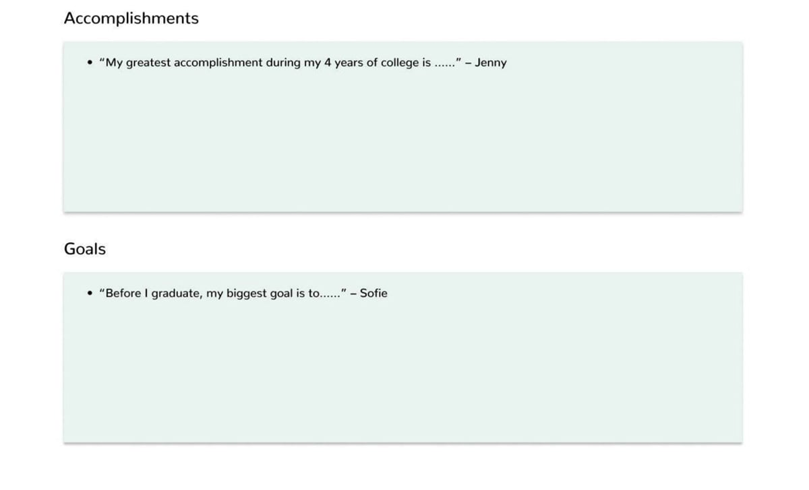

Jenny
Sharing College Experiences
Figma | HTML | CSS | JavaScript
development
2022
Background
This is a project where the prompt was to tell a personal narrative about my own growth, learning or mental/physical health through the development of an interactive project using different JavaScript libraries. I focused my website on welcoming users to reflect on their college experience by using the Conversational Form library for users to submit their input and the Swiper library to carousel the individual card submission on the website. I also used the Back4App database to perform CRUD actions on each card.
User Interface
Brainstorming
After researching the available JS libraries, I decided to focus on Slick, Conversational Form, and ApexCharts. My idea was to use the Conversational Form library to have the users fill out a form and intake information about their college experience. Then, use Slick to have each card carousel and allow users to perform CRUD actions on their card. I also planned to use ApexCharts to display a summary of statistical data for visitors to see.
Sketches
 Design Comp
 This was my first interface I designed. I wanted to display each user's input in a card to resemble a certificate and I wanted to display the statistics and summary of their goals and accomplishments below. However, the pastel colors I chose didn't seem to reflect the college experience topic and the entire design felt too divided. I also didn't really have any purpose for the charts and I felt like they were adding too much unnecessary detail to the page.
I improved my design by removing the charts, adding a blue outline on the cards to make them look more like certificates, and changing the color theme to a more calming and inviting place for reflection. I also designed the interface to view a person's card and read about their college experience. My idea was to display their name, college year, a summary of their experience, how they have grown, and their overall experience using a smiley face or sad face.
I still felt like the color theme wasn't right, it felt too muted. So after doing more research and getting inspiration, I removed most of the blue and replaced it with gray and white colors, which made the design simple and clean, yet professional and welcoming for users. I also decided to display the conversational form as an overlay instead when the 'share your experience' button is clicked because making the page scrollable didn't seem fitting.
Development
Overview
This webpage was developed using HTML, CSS, and JavaScript. It uses the Conversational Form and Swiper JS libraries as well as the Back4App database. It is specifically designed at a 1366 x 768 viewport as that is the current most popular website dimension.
Challenges
When working on this project, I mainly struggled with learning how to use the Conversational Form library because it had some limitations or faulty features that I wasn't sure how to work around. And because it isn't a very well known library, I wasn't able to find much discussion about how to set certain things with it on the Web.
What Can Be Improved
Given the time constraint on this assignment, I spent most of my time focusing on getting all three tools: two libraries and the database to cooperate well. If I had more time, I would test my project to make sure there are no faulty errors, especially on the user end because I feel like my project has some areas that I wasn't aware of going wrong.
Conclusion
Overall, working on this project has allowed me to understand how to use JavaScript libraries to build websites and it has expanded my limitations of only using vanilla JavaScript. Using the Back4App database has also given me the opportunity to learn how databases are useful and practice performing some of the CRUD actions.